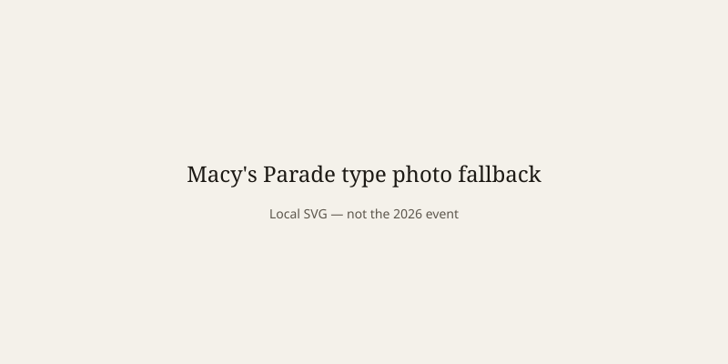

New York · parade · 26 November 2026
Macy’s postponed its 100th Thanksgiving Day Parade to Saturday because of forecast high winds.
.jpg)
What is agreed across desks
Macy’s, New York City officials, and NBC announced on the evening of 25 November that the 100th annual Macy’s Thanksgiving Day Parade would not take place on Thursday 26 November. The new start time is 8:30 a.m. Eastern on Saturday 28 November. The decision followed National Weather Service forecasts of sustained winds and gusts high enough to exceed the 23 mph sustained or 34 mph gust thresholds at which the large character balloons are required to be grounded. Those thresholds date to rules issued after a 1997 incident. Balloons that had already begun inflation on Wednesday were deflated overnight and returned to a Macy’s facility in New Jersey for re-inflation on Friday. Executive producer Will Coss said a second public inflation viewing would not occur. Mayor Zohran Mamdani and Police Commissioner Jessica Tisch described the move as prioritizing participant and spectator safety.
Reuters, the BBC, CNN, and the Associated Press (via local outlets) all report the same core facts: first weather-related postponement in the parade’s history, rescheduling to Saturday morning, consultation with city agencies, and the role of high-wind forecasts. The parade route from 77th Street and Central Park West to Herald Square remains unchanged. NBC will air the previous year’s parade in the original Thursday slot and the live 2026 parade on Saturday.
What is only a quote
Coss said the company was “heartbroken” over the postponement and that logistics were still being worked out to keep the same performing groups. Macy’s statement emphasized that “the safety of our participants and spectators is our top priority.” No outlet has published independent measurements of Thursday’s winds at street level in the parade corridor because the event did not occur. Forecasts of 50–60 mph gusts remain model output, not observed data for the postponed morning. Claims that every band and float can rearrange travel are statements of intent by organizers, not completed logistics.
Mechanism / history a reader needs
The parade has run on Thanksgiving morning since 1924, with a multi-year suspension only during World War II when materials were diverted. Large helium balloons became signature elements later. After a balloon struck a lamppost and injured a spectator in 1997, the city imposed hard wind limits. High-wind warnings are uncommon in New York City; the NWS noted only 37 such warnings in the prior 24 years. Moving the entire parade, rather than grounding only the balloons, is the novel element.
The balloons are tethered and guided by handlers. Gusts above the threshold create a risk that a balloon could break free or strike buildings and street furniture. The 1997 rules treat that risk as unacceptable for a street event drawing millions of spectators. Deflating and re-inflating the fleet is a multi-hour operation that requires a secure facility; Macy’s used its New Jersey warehouse for that purpose. Saturday’s forecast is better, with lower wind speeds expected, though still breezy. Whether every performing group can rearrange travel remains an operational question that organizers have not fully answered in public.
Philadelphia’s 6abc Dunkin’ Thanksgiving Day Parade, which calls itself the oldest in the United States, was canceled as a street event and converted to a television-only broadcast on the original Thursday. That contrast shows that different organizers reached different operational conclusions under the same storm system.
What the story is not
It is not a cancellation. It is not evidence that any balloon was damaged. It is not a political statement about the holiday. It is not a finding that Thursday’s winds would have exceeded the threshold at parade height; that remains a forecast, not an observation. The photograph above is a type photograph of balloon inflation from an earlier year. It is not a picture of the 2026 deflation or of Saturday’s parade.

Additional operational context: the 100th anniversary edition was planned to include 100 inflatables, among them new character balloons. Deflation required crews working through the night of 25-26 November. Re-inflation is scheduled for Friday afternoon in New Jersey before the balloons are transported back to the staging area near Central Park. Handler teams, marching bands from across the country, and float sponsors must rebook travel and lodging for a Saturday start. NBC’s dual-broadcast plan (prior year on Thursday, live on Saturday) preserves the network’s traditional Thanksgiving morning slot while still delivering the current edition.
High-wind warnings in New York City are rare. The National Weather Service has issued only a few dozen in the past quarter-century. The 34 mph gust threshold is not arbitrary; it was set after the 1997 lamppost incident in which a balloon caused injury. Organizers treat the threshold as a hard stop rather than a judgment call. Because the event was postponed before Thursday morning, no street-level anemometer reading from the parade corridor exists for the original date. Saturday’s forecast is the operative weather product for the rescheduled event.
The broader storm system also produced coastal flooding concerns and travel disruptions across the Northeast and Mid-Atlantic. Macy’s decision was made in consultation with the New York Police Department and the city’s emergency management office. The same storm system led Philadelphia organizers to cancel their street parade entirely rather than reschedule it. That difference illustrates that wind thresholds, balloon size, and route geometry are not identical across cities. In New York the combination of tall buildings, dense spectator barriers, and the sheer number of large helium balloons made the risk calculation more restrictive than for smaller or ground-based parades.
Handler teams for the giant balloons number in the dozens per balloon. Each handler must be trained, and the teams include both Macy’s employees and volunteers. Re-assembling those teams for a Saturday morning, after many had already traveled for a Thursday start, is a logistics problem that organizers have described as solvable but not yet completed in public detail. Floats that are not balloons can in principle move on either day; the balloons are the binding constraint. The decision to move the entire event rather than ground only the balloons preserves the visual character of the 100th anniversary edition.
NBC’s programming choice—airing the 2025 parade on Thursday and the live 2026 parade on Saturday—means that viewers who tune in on the traditional morning will see last year’s balloons and performers. That is a contractual and scheduling solution, not a claim that the 2026 event is cancelled. The live broadcast on Saturday will still reach a national audience, though the in-person crowd is expected to be smaller because many out-of-town visitors had planned only for Thursday.
Source articles and scores
Images: Wikimedia Commons type photograph of balloon inflation (not the 2026 event) linked via Special:FilePath. Captions state they are not the postponed parade. onerror falls back to committed SVG in images/. No CORS attribute; ordinary img requests.